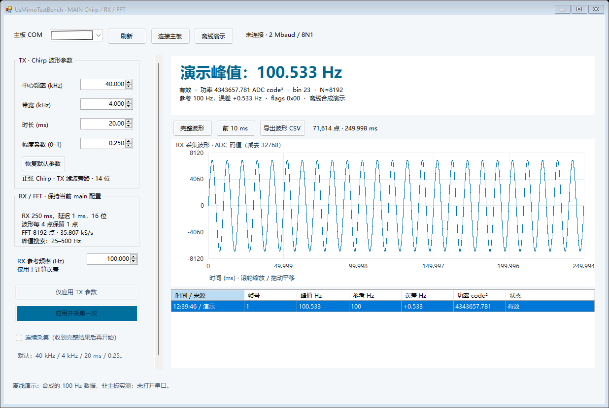

默认40 kHz / 4 kHz / 20 ms / 0.25。软件已编译并通过离线协议测试；144字节设置/触发命令通过实际UART RTL仿真。FPGA源码和SOF保持不变。尚未连接真实COM做硬件联调。

上图是明确标识的离线合成演示，不作为实板测量结果。频谱峰值来自M1报文，PC仅换算频率与功率。
软件自测 · UART RTL日志 · 版本与哈希 · 紧凑视图 · 波形放大
使用说明